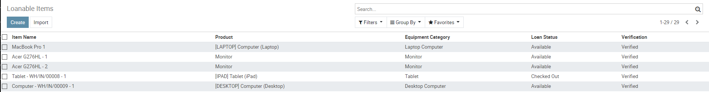
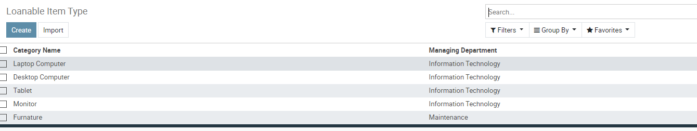

Manage Equipment



Create individaul item records to track item use and ownership.
Categorize items and indicate which department manages that cateogry.
Define useable accessories for each category (such as monitor cables)